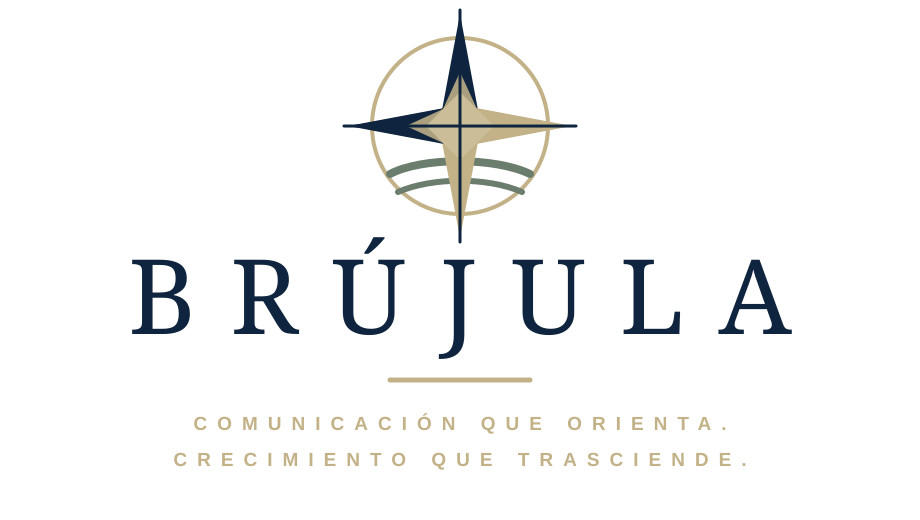

Raíces
Historia, valores e identidad.

Diseñamos el rumbo. Cada organización construye el camino.
Tu organización no necesita más ruido. Necesita una dirección clara para decir quién es, qué hace y por qué importa.
En BRÚJULA ordenamos mensajes, criterios y decisiones para convertir la comunicación en una herramienta de confianza y crecimiento.
Estrategia antes que ruido.
Identidad antes que fórmulas.
Autonomía para cada equipo.
Nuestra esencia
Encontramos una voz auténtica y la convertimos en una dirección posible.
Historia, valores e identidad.
Cercanía y mirada local.
Estrategia, innovación y evolución.
Identidad institucional
Convertimos mensajes, canales y procesos en un sistema simple que cada equipo pueda sostener con autonomía.
Prioridades, públicos y mensajes claros.
Una voz coherente y reconocible.
Vínculos consistentes y profesionales.
Escuchamos para entender.
Transformamos ideas en mensajes.
Construimos relaciones sólidas y duraderas.
Aprendemos, nos adaptamos y miramos hacia adelante.
Comunicamos lo que realmente importa.
Quiénes somos
Detrás de BRÚJULA
Método NORTE
Elegí una etapa para conocer cómo convertimos la intuición en un plan posible.
Definimos qué necesita resolver la organización y cuál es el verdadero punto de partida.
Leemos la identidad, el contexto, los canales y las oportunidades reales.
Acordamos prioridades, públicos y mensajes para avanzar con claridad.
Convertimos la estrategia en criterios y capacidades para el equipo.
Ordenamos acciones concretas para comunicar con autonomía y continuidad.
Servicios
Una propuesta flexible para ordenar hoy y crecer mañana.
Una lectura clara del punto de partida.
Prioridades y acciones para avanzar.
Herramientas para fortalecer equipos.
Acompañamiento para decidir mejor.
Mensajes y presencia pública coherentes.
Identidad, campañas y piezas coherentes.
Fotografía, video, reels e historias.
Vínculos, gacetillas y oportunidades de difusión.
Vocería, coberturas y seguimiento institucional.
Propuestas por organización
Elegí tu organización para descubrir un punto de partida posible.
Propuesta BRÚJULA
Una identidad clara para alinear equipos, clientes y aliados.
Propuesta BRÚJULA
Una narrativa clara para fortalecer el vínculo con toda la comunidad educativa.
Propuesta BRÚJULA
Una comunicación que integra disciplinas, socios, familias y patrocinadores.
Propuesta BRÚJULA
Mensajes cercanos para fortalecer la confianza y la participación.
Propuesta BRÚJULA
Una narrativa que hace visible el trabajo, el propósito y el impacto.